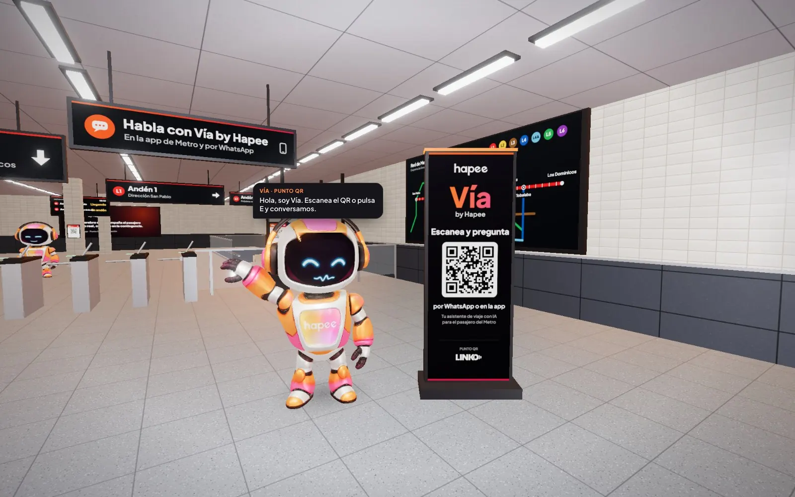
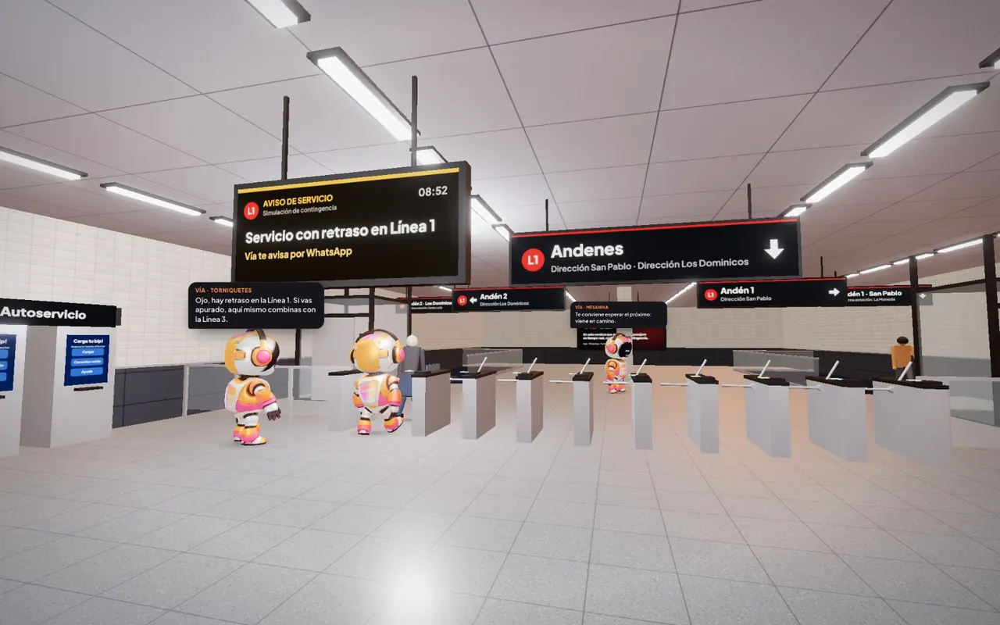
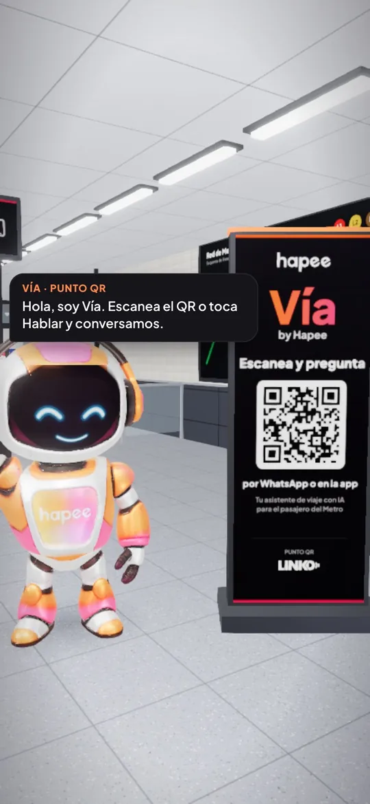
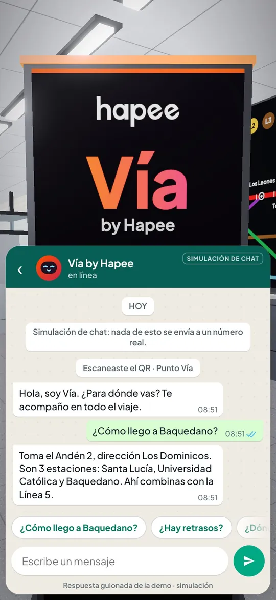
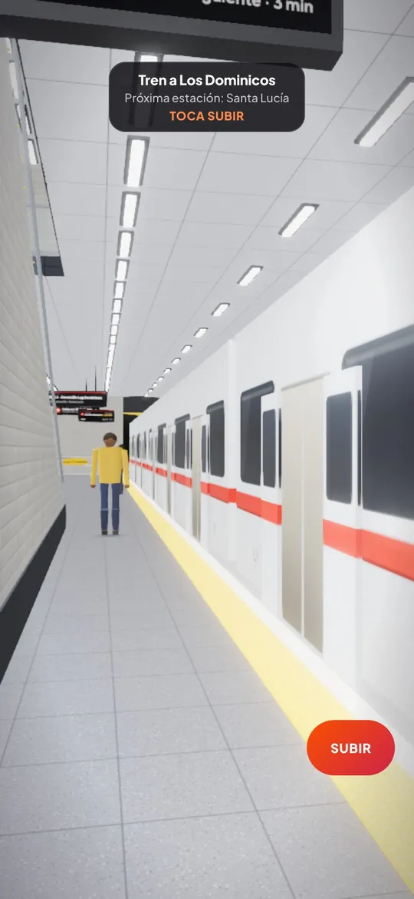
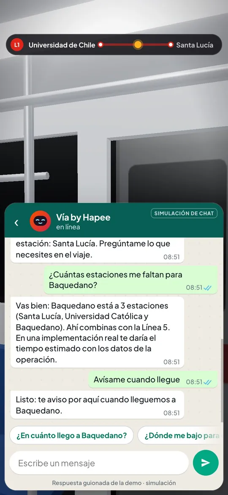
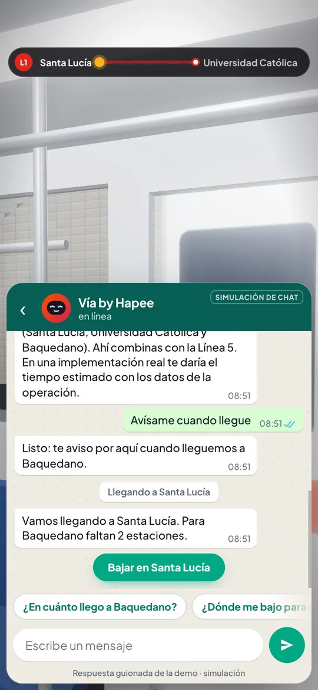
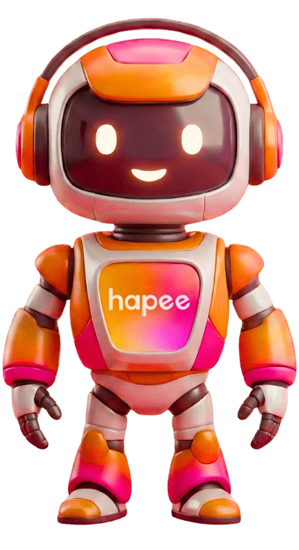

Víaby Hapee
Un asistente de viaje con IA que acompaña al pasajero del Metro en tiempo real, con foco especial en los momentos de contingencia.
- Un solo cerebro para toda la red
- App, WhatsApp y QR
- Tiempo real

Adentro puedes caminar, hablar con los robots de Vía, escanear un QR, subir al tren y chatear con Vía durante el viaje.
El problema
Un tren detenido.Un desvío.Un cambio de servicio.
Justo cuando los canales de atención colapsan y la incertidumbre se dispara, Vía responde en el canal donde el pasajero ya está.

Cómo funciona Vía
Un asistente para toda la red, en cada canal
-
01
Un solo cerebro
No es un agente por estación: es un solo motor que atiende toda la red y escala a las futuras líneas sin rearquitectura.
El robot acompañante de Vía lleva a una persona mayor, a su ritmo, hacia el andén. -
02
Omnicanal
Vive donde ya está el pasajero —la app y WhatsApp— más un punto físico liviano con QR en estación. Sin intervenir la infraestructura existente.
El Punto Vía de la mesanina: escaneas el QR y la conversación sigue en el chat. -
03
Tiempo real
Se integra por API con los feeds de estado del servicio que la operación ya tiene. La información llega a tiempo y personalizada, no como un aviso genérico por altavoz.
Arriba del tren, el mismo chat te dice cuántas estaciones faltan.
Sin intervenir la infraestructura existente.
Vía se apoya en lo que ya funciona: los canales que el pasajero usa todos los días y los feeds de estado que la operación ya tiene.
- App
- Punto QR en estación
- API con los feeds de estado
Un viaje con Vía
De la mesanina al andén, con Vía al lado
Este es el recorrido que puedes hacer hoy en la estación 3D: vas de Universidad de Chile a Baquedano por la Línea 1.
-

Escaneas el QR
En el Punto Vía de la mesanina, el robot te invita a escanear el código y conversar.
-

Te dice dónde ir
¿Cómo llego a Baquedano?
Andén 2, dirección Los Dominicos: son 3 estaciones. -

Subes al tren
En el andén, Vía te confirma la dirección del tren y la próxima estación antes de subir.
-

Le preguntas cuántas estaciones faltan
El mismo chat sigue contigo arriba del tren:
Vas bien: Baquedano está a 3 estaciones.
-

Te avisa antes de llegar
Vamos llegando a Santa Lucía. Para Baquedano faltan 2 estaciones.
Simulación: en la estación 3D, Vía no está conectado a la operación real de Metro. Las respuestas son de demostración y el chat estilo WhatsApp no envía mensajes a ningún número.
Sobre Hapee
Vía corre sobre Hapee
Vía no es un experimento de laboratorio ni una idea en una lámina: corre sobre una plataforma que ya está en producción con clientes reales. El desafío del piloto no es inventar la tecnología, es adaptarla al operador.
- Plataforma propietaria
- Cloud-native en AWS
- Multi-motor: GPT, Gemini y Claude
- MCP nativo con Claude de Anthropic

- +2KClientes automatizadosLa plataforma Hapee opera hoy con clientes reales, en producción.
- ~2,4 sRespuesta del agenteVelocidad que importa cuando miles de pasajeros consultan a la vez.
- 24/7En cada contingenciaEscalado automático en AWS: crece en el peak y vuelve a su base.
La propuesta parte con un piloto acotado en estaciones de alto flujo: riesgo bajo, aprendizaje rápido.
Qué sigue
Ya estamos adentro, construyendo con Metro
-
2026
Demo Day de Metro de Santiago
Presentamos Vía al proceso de innovación abierta que este año convocó bajo el lema «Transformando la red que mueve la ciudad».
-
Agosto 2026
Avanzamos de fase
La propuesta fue revisada y seleccionada para seguir en carrera: mentorías y planes de desarrollo de IA junto al equipo de Metro.
Estamos aquí -
Lo que viene
El concurso
Pronto estaremos concursando para convertirnos en la IA oficial del Metro de Santiago.
-
Fin de año
El gran ganador
El gran ganador se anuncia a fin de año. Diciembre dirá quién se queda con el título.
Mientras esa final se acerca, la relación ya está en movimiento: estamos explorando side projects con Metro.
Lee la nota del Demo DayHablemos
Vía corre sobre Hapee. Tu negocio también puede.
La misma plataforma con la que postulamos al Metro ya atiende clientes reales todos los días. Conócela sin compromiso.